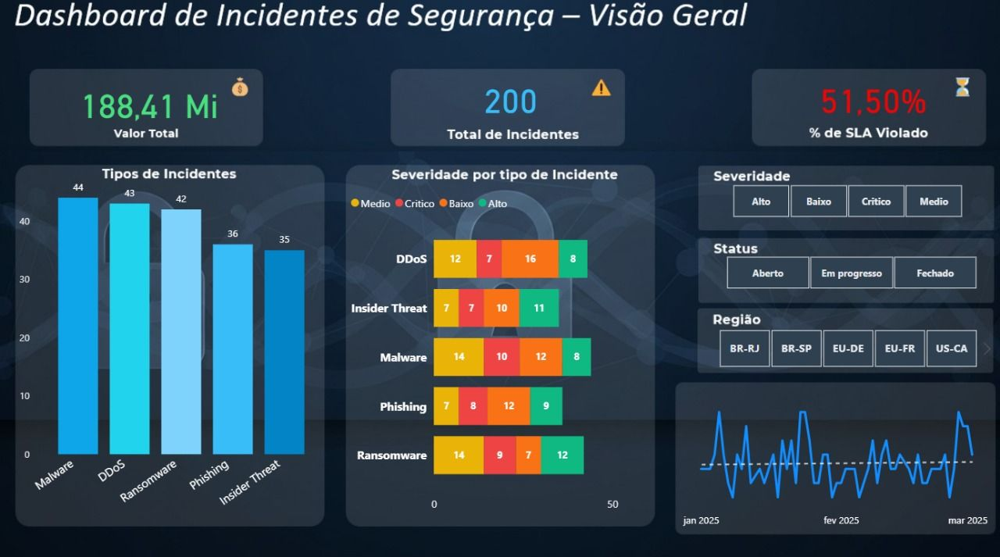

Contexto
Organizações enfrentam diariamente um volume crescente de incidentes de segurança. Nesse cenário, transformar dados operacionais em informações estruturadas pode apoiar a priorização, a resposta e a mitigação de riscos.
O desafio
Como transformar registros de incidentes em uma visão integrada capaz de apoiar decisões de Segurança da Informação e gestão de riscos?
A solução
Foi desenvolvido um dashboard analítico em Power BI, utilizando uma base fictícia de 200 incidentes, estruturada para simular um ambiente corporativo de gestão de incidentes.
Indicadores
Principais insights
Malware, DDoS e Ransomware aparecem entre as categorias com maior volume de registros.
O índice de 51,5% de SLA violado indica uma oportunidade de análise dos processos de resposta, priorização e capacidade operacional.
Visão de negócio
O dashboard demonstra como dados de Segurança da Informação podem apoiar decisões relacionadas à priorização de incidentes, desempenho operacional e gestão de riscos.
Aprendizado
O projeto permitiu aplicar conceitos de análise de dados, visualização, indicadores de segurança e interpretação orientada à tomada de decisão.
Evidência

Dashboard desenvolvido em Power BI para análise de incidentes de Segurança da Informação.
Transparência
A base utilizada neste projeto é fictícia e foi desenvolvida exclusivamente para fins educacionais e de portfólio profissional.
O projeto não contém dados reais ou informações confidenciais.